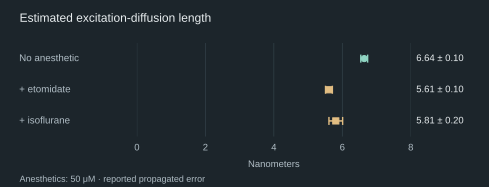

START HERE THE SIMPLE VERSION
Explain it like I’m 5
A big question, in three small steps.
-
Your brain is a busy team.
Imagine lots of tiny teammates passing messages. Those teammates are brain cells, called neurons. Together, they help you think, feel, and notice the world. But how does all that activity become the feeling of being you?
-
Tiny things follow surprising rules.
Zoom in much, much closer than a brain cell. At this tiny scale, things can behave like waves, and several possibilities can exist together before we measure a result. We call these quantum rules. They apply to the stuff your brain is made of, too.
-
Could those rules help make a thought?
Some scientists wonder whether tiny tubes inside brain cells help these quantum effects last long enough to matter for thought. These tubes, called microtubules, already help cells hold their shape. But the brain is a busy, jostling place, which can quickly disturb the special quantum behavior those scientists are looking for.
01 WHAT NEEDS EXPLAINING
What a quantum explanation has to establish.
Quantum mechanics already applies to every molecule in your brain. The interesting question is whether a particular quantum process does something essential for thought or conscious experience. Calling the brain “quantum” doesn’t identify that process.
A superposition combines possible states in a way that can produce interference, rather like waves reinforcing or canceling one another. Those relationships are delicate. As a system interacts with its surroundings, the interference can become inaccessible: decoherence. A warm, wet brain gives a proposed mechanism plenty of interactions to survive.
Temperature alone doesn’t settle the question. The proposed state, its lifetime, and its effect on the surrounding biology have to be specified. Moving an excitation through a protein, preserving a quantum state across neurons, and producing a conscious experience are different achievements. A measurement of the first cannot quietly stand in for the other two.
02 ORCH-OR & COLLAPSE
What Orch-OR proposes.
Roger Penrose and Stuart Hameroff developed orchestrated objective reduction, or Orch-OR, in the 1990s, with a central account published in 1996. Their 2014 review explains the proposal and responds to objections. It is a review by the theory’s proponents, not a new experiment demonstrating consciousness.
Hameroff supplies the candidate biological machinery: microtubules, hollow tubes assembled from a protein called tubulin. They help organize cells and give neurons structure. He proposes that they can also support protected quantum states coordinated within and between neurons. Penrose supplies an additional physical claim: certain superpositions become unstable because of gravity and undergo an objective collapse. Orch-OR identifies these orchestrated collapses with moments of conscious experience.
That last step goes beyond ordinary quantum chemistry. Penrose argues that consciousness requires something classical computation cannot supply; the proposed collapse is meant to supply it. Finding unusual optical behavior in tubulin would still leave the coordinated states, the collapse mechanism, and the link to experience to establish.
A collapse model meets an underground detector
There is a way to test some collapse physics without going near a brain. In a particular mathematical model of gravity-related collapse, the same noise that localizes matter also makes charged particles emit radiation. Donadi and colleagues used a germanium detector at Gran Sasso to look for that radiation, with the mountain helping shield it from cosmic-ray background.
Their result ruled out the natural, parameter-free version of the Diósi–Penrose model they tested. The bound requires its mass-smearing length, a parameter describing how spread out the model treats nuclear mass, to exceed 5.4 × 10−11 meters at 95% probability. That is a concrete problem for that formulation. Changing the collapse dynamics or its parameters changes what the experiment excludes; it doesn’t dispose of every quantum theory of the brain.
03 MICROTUBULE EXPERIMENTS
What moved through the microtubules?
In Kalra and colleagues’ 2023 experiment, ultraviolet light excited purified proteins in solution at room temperature. A fluorescent quencher attached to the proteins shortened the light-emission lifetime. From that change, the team inferred how far the excitation could diffuse through the structure. They estimated about 6.6 ± 0.1 nanometers for microtubules.
The chart uses the more precise values in supplementary Table S5. Adding 50 micromolar etomidate or isoflurane reduced the estimate. These are model-derived diffusion lengths; the error bars propagate measurement errors and don’t include all the uncertainty in the model.

The conventional Förster-based simulations gave 1.11 or 1.54 nanometers under two different assumptions about which amino acids exchange energy. Those are separate predictions, not the ends of an uncertainty interval. The discrepancy gives researchers a reason to revisit the transfer model. The paper discusses short-range orbital overlap, which a point-dipole approximation misses. It does not uniquely identify long-lived coherence, and the authors describe their diffusion length as an order-of-magnitude estimate.
Anesthetics act on many targets, so a change in this protein preparation doesn’t single out Orch-OR. The experiment establishes a question about energy transfer that can be investigated without assuming a theory of consciousness.
More fluorescence, with a mechanism still to pin down
Babcock and colleagues’ 2024 paper models superradiance, in which emitters act collectively and radiate faster. Its experiments measured fluorescence quantum yield: the share of absorbed photons that emerge as emitted light. At 295-nanometer excitation, the reported yield was 10.9 ± 1.3% for tubulin dimers and 14.7 ± 1.6% for microtubules.
A higher yield can result from faster light emission or less energy lost through other routes. The authors explicitly say that complementary lifetime measurements are needed to determine the radiative rate; they did not perform them. Their measurements support enhanced fluorescence in isolated preparations, while the proposed superradiant mechanism remains a further inference. The much larger networks in their calculations were modeled structures, not living neurons under observation.
04 XENON & NUCLEAR SPIN
Xenon isotopes behave differently in mice.
Xenon provides a more direct connection to nervous-system behavior. Its isotopes have nearly identical chemistry but different nuclear spins. In Li and colleagues’ 2018 study, 80 male mice were split into four groups of 20. Each group received a different xenon isotope alongside 0.50% isoflurane.
The endpoint was loss of the righting reflex: a mouse placed on its back failed to roll over within ten seconds. The spin-bearing isotopes required more xenon to reach that endpoint. Higher concentration means lower anesthetic potency in this experiment.
| Isotope | Nuclear spin | Reported ED50 |
|---|---|---|
| Xenon-132 | 0 | 15 ± 4% |
| Xenon-134 | 0 | 16 ± 5% |
| Xenon-131 | 3/2 | 22 ± 5% |
| Xenon-129 | 1/2 | 23 ± 7% |
Mean ± standard deviation; 20 mice per isotope, all with 0.50% isoflurane. ED50 is the concentration associated with the endpoint in half the animals.
The paper also calculates xenon-alone concentrations by assuming the two anesthetics’ effects add together. The table above keeps the measured combination visible. A righting-reflex result tells us about anesthetic behavior; it doesn’t identify the molecular process or tell us what an animal experienced.
A candidate mechanism with a difficult lifetime requirement
Smith and colleagues’ radical-pair paper, published in 2021, tries to explain those same mouse results. A radical pair consists of two molecules with unpaired electrons. In the proposed mechanism, interactions involving xenon’s nuclear spin change the pair’s spin evolution and chemical reaction yields. They place the hypothetical pair near an NMDA receptor, a protein involved in neural signaling.
The calculation can fit the isotope potency ratios by adjusting coupling, reaction, and coherence parameters. But the proposed radical pair has not been identified in that biological setting. One fitted parameter set assumes a microsecond of spin coherence. The authors acknowledge that free superoxide, one candidate partner, is expected to lose that coherence in under a nanosecond. Binding could change its behavior, but the required protection remains to be demonstrated.
The paper predicts how changing a magnetic field could affect isotope potency. That gives an experiment something specific to check. Fitting the existing mouse data is useful for designing that experiment; it is not a second, independent observation of the effect.
05 THE NEXT EXPERIMENTS
Before connecting a brain to a quantum computer.
Hartmut Neven and his coauthors take a different position in their 2024 proposal. They associate a conscious moment with the formation of a superposition and dispense with gravity-driven collapse. Their account uses the many-worlds interpretation, with its parallel branches of reality. The proposed connection between those branches and experience is an additional conjecture.
They ask whether coherently coupling a brain to a quantum processor could enlarge the joint superposition and produce a richer reported experience. Ordinary electrical recording or stimulation would not establish the required quantum link. Before that experiment, the authors propose testing whether a biological sample can mediate entanglement between two controlled qubits, while excluding a direct connection between them. Even a successful result would establish a quantum channel, leaving its role in experience to test.
There is a nearer-term program, too. Neven’s 2026 conference abstract reports behavioral isotope effects in fruit flies exposed to xenon and nitrous oxide, alongside NMR and electrophysiological studies of human brain organoids. Organoids are simplified models of neural tissue. The abstract gives no sample sizes, effect estimates, or full methods, so it cannot carry the evidential weight of a complete experimental report. It does not report a functioning brain–quantum computer interface.
The next useful result would connect the measurements across scales: identify a quantum process in relevant tissue, show that it survives there, and change it selectively while measuring neural activity. A claim about conscious experience would then need an experiment that measures experience, with controls for ordinary effects of the intervention.
These papers give us reasons to run those experiments. Calling all their results evidence for one quantum theory of consciousness would erase the disagreements that make the tests useful. A protein’s fluorescence and an animal’s response to anesthesia are worth explaining even if the answer never becomes a theory of consciousness.
READ FURTHER
Research & sources
- Hameroff & Penrose, “Consciousness in the universe: A review of the ‘Orch OR’ theory”Physics of Life Reviews, 2014 · Theory and review
- Kalra et al., “Electronic Energy Migration in Microtubules”ACS Central Science, 2023 · Fluorescence experiment; chart data from supplementary Table S5
- Li et al., “Nuclear Spin Attenuates the Anesthetic Potency of Xenon Isotopes in Mice”Anesthesiology, 2018 · Mouse experiment
- Donadi et al., “Underground test of gravity-related wave function collapse”Nature Physics, 2021 · Radiation constraint on a collapse model
- Babcock et al., “Ultraviolet Superradiance from Mega-Networks of Tryptophan in Biological Architectures”The Journal of Physical Chemistry B, 2024 · Modeling and fluorescence measurements · Original 2023 preprint
- Smith et al., “Radical pairs may play a role in xenon-induced general anesthesia”Scientific Reports, 2021 · Computational model of the 2018 mouse results
- Neven, “Towards a Brain-Quantum Computer Interface: Identifying Potential Coupling Mechanisms via Anesthetic Isotope Effects”The Science of Consciousness, 2026 · Conference abstract
- Neven et al., “Testing the Conjecture That Quantum Processes Create Conscious Experience”Entropy, 2024 · Research proposal underlying the conference abstract
A peer-reviewed model, a measured result, and a conference abstract answer different questions. The descriptions above identify which kind of source you’re opening.